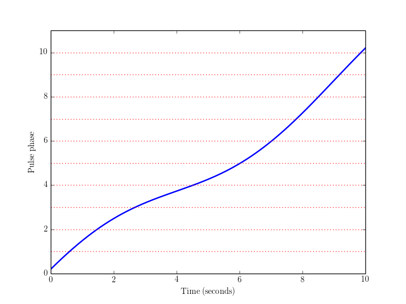
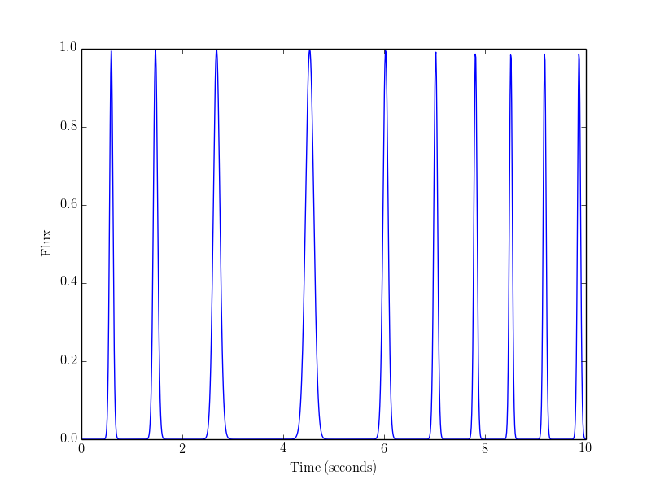

Example 3: python phase model¶
Note that the documentation is for the cmake_pybind11 branch of simpulse, not the master branch! The cmake_pybind11 simpulse branch will be merged to master soon.
Note: before running the example scripts, you will need to do make install in the build directory (make is not enough).
This example shows how to define a new pulsar phase model in python, by subclassing ‘class simpulse.phase_model_base’. We implement a toy example: a five-parameter “sinusoidal” phase model in which the pulse frequency is a sinusoidal function of time.
The plots below are similar to Example 2: simulating a pulsar: we show an example of the phase model phi(t), and the associated pulsar simulation.
 {kind=link}
{kind=link}
Here is the script (simpulse/examples/python/03-python-phase-model.py).
#!/usr/bin/env python
#
# This example shows how to define a new pulsar phase model in python, by subclassing
# 'class simpulse.phase_model_base'.
#
# We implement a toy example: a five-parameter "sinusoidal" phase model in which the
# pulse frequency is a sinusoidal function of time. For more info, see the 'class
# sinusoidal_phase_model' docstring below.
#
# Note that simpulse is mostly written in C++, and in particular 'class phase_model_base'
# is a C++ class whose eval_phi() method is called from C++. However, it is possible
# to define a python subclass whose eval_phi() method is callable from either C++ or
# python. This is more convenient than defining a C++ subclass, but also slower!
#
# Similar to example 2, this script plots an example sinusoidal phase model, and a
# simulation of the pulses.
import simpulse
import numpy as np
import matplotlib.pyplot as plt
############################################################################################
#
# Definition of 'class sinusodial_phase_model'.
class sinusoidal_phase_model(simpulse.phase_model_base):
"""
A toy phase model in which the pulse frequency is a sinusoidal function of time.
(This resembles a binary pulsar, but doesn't have an eccentricity parameter, and
and is wrong at order v^2/c^2.)
Constructor syntax:
pm = sinusoidal_phase_model(pulse_phase, pulse_freq, orbital_phase,
orbital_freq, beta, t0)
where:
- pulse_phase is the phase phi(t0) at the reference time t0
- pulse_freq is the average pulse frequency phi'(t)
- orbital_phase is the orbital phase at the reference time t0
(0 = maximum pulse frequency, 0.5 = minimum pulse frequency)
- orbital_freq is the orbital frequency
- beta is the max fractional deviation of the pulse frequency from
its average (i.e. beta=0.01 means that the instantaneous frequency
can be between 99% and 101% of the average)
In detail, the model is as follows. The orbital phase theta(t) is:
theta(t) = orbital_freq * (t-t0) + orbital_phase
The pulse frequency phi'(t) is:
phi'(t) = pulse_freq * (1 + beta cos(2 pi theta(t)))
The phase model phi(t) is the antiderivative:
phi(t) = pulse_phase + pulse_freq * (t-t0)
+ c (sin(2 pi theta(t)) - sin(2 pi orbital_phase))
where c = pulse_freq * beta / (2 pi orbital_freq).
"""
def __init__(self, pulse_phase, pulse_freq, orbital_phase, orbital_freq, beta, t0):
simpulse.phase_model_base.__init__(self)
self.pulse_phase = pulse_phase
self.pulse_freq = pulse_freq
self.orbital_phase = orbital_phase
self.orbital_freq = orbital_freq
self.beta = beta
self.t0 = t0
# A phase_model can be specified by defining the virtual function eval_phi(),
# which returns the phase phi(t) at a given time t.
#
# The 'nderivs' argument can be used to compute the n-th derivative (d^n phi) / dt^n.
# Currently we don't actually use 'nderivs' anywhere, and I may remove it from the
# simpulse API eventually! In this example, it would be straightforward to compute
# derivatives of the phase model, but I didn't bother implementing this.
def eval_phi(self, t, nderivs=0):
assert nderivs == 0, 'sinusoidal_phase_model: nderivs > 0 not implemented yet!'
t -= self.t0
theta = self.orbital_freq * t + self.orbital_phase
c = self.pulse_freq * self.beta / (2 * np.pi * self.orbital_freq)
return (self.pulse_phase + (self.pulse_freq * t)
+ c * (np.sin(2*np.pi*theta) - np.sin(2*np.pi*self.orbital_phase)))
# Optional: if eval_phi_sequence() is also defined, then simulating pulsars may be
# significantly faster. This function should return a 1D array of length 'nsamples',
# containing phi(t) values sampled at an evenly spaced set of points between t0 and t1.
#
# If eval_phi_sequence() is not defined, then libsimpulse will emulate it, by calling
# eval_phi() in a loop (equivalent but possibly slower).
def eval_phi_sequence(self, t0, t1, nsamples, nderivs=0):
# Our implementation of eval_phi() happens to be written in a way where the 't'
# argument can be either a scalar or an array. Therefore, we can trivially
# implement eval_phi_sequence() as follows.
t = np.linspace(t0, t1, nsamples)
return self.eval_phi(t, nderivs)
############################################################################################
#
# The rest of the script is similar to example 2 ("simulating a pulsar") and mostly
# uncommented. We construct a phase model and a pulse profile, plot the phase model,
# then simulate and plot the pulses.
t0 = 0.0
t1 = 10.0
nt = 1000 # high-resolution plot
phase_model = sinusoidal_phase_model(
pulse_phase = 0.2,
pulse_freq = 1.0,
orbital_freq = 0.1,
orbital_phase = 0.1,
beta = 0.5, # unrealistic! (typical beta for a binary pulsar is ~10^{-4})
t0 = 0.0
)
profile = simpulse.von_mises_profile(duty_cycle=0.1, detrend=False)
########## First plot: phase model phi(t)
plt.plot(np.linspace(t0,t1,1000), phase_model.eval_phi_sequence(t0,t1,1000), 'b-', lw=2)
for i in xrange(1,11):
plt.axhline(y=i, color='r', linestyle=':')
plt.xlabel('Time (seconds)')
plt.ylabel('Pulse phase')
plt.ylim(0,11)
# plt.savefig('example3_phase_model.png') # write to file
plt.show() # display to screen
plt.clf()
########## Second plot: pulsar simulation
tvec = np.linspace(t0, t1, nt)
rhovec = profile.eval_integrated_samples(t0, t1, nt, phase_model)
plt.plot(tvec, rhovec)
plt.xlabel('Time (seconds)')
plt.ylabel('Flux')
# plt.savefig('example3_pulses.png') # write to file
plt.show() # display to screen